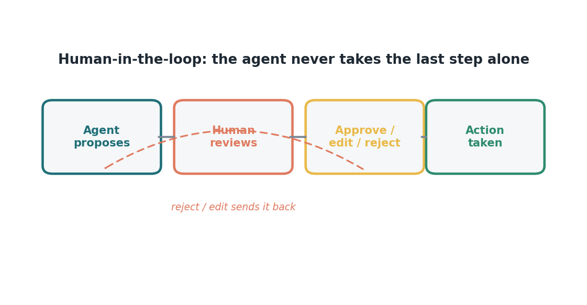

Edisi 7 — Human-in-the-loop: tetap ada yang bertanggung jawab, tanpa kehilangan kendali
Waktu tim kami pertama kali lihat agent bikin draft satu batch appeal, ruangannya jadi agak hening, terus ada yang nanya pertanyaan yang lagi ada di kepala semua orang: "Kalau mesinnya yang kerja, siapa yang kena kalau salah?" Itu pertanyaan yang tepat, dan saya senang pertanyaan itu diucapkan keras-keras, bukan cuma jadi kekhawatiran yang dipendam. Karena jawabannya bukan angkat bahu atau formalitas belaka. Itu inti dari cara kita pakai alat-alat ini.
Jawabannya: kamu, dan itu memang sengaja didesain begitu. Agent mengusulkan; manusia me-review; manusia menyetujui; baru setelah itu tindakannya jalan. Agent nggak pernah ambil langkah terakhir sendirian. Kalau dia bikin draft appeal, kamu baca dulu sebelum dikirim. Kalau dia siapkan entry, kamu setujui dulu sebelum di-post. Tanggung jawab nggak pindah ke mesin, karena mesin nggak pernah pegang keputusan akhir.

Kadang orang dengar "human-in-the-loop" dan mikirnya itu semacam rem — sesuatu yang bikin alat cepat jadi lambat. Saya mau ajak kamu lihat dari sisi lain. Justru itu yang bikin kita bisa pakai alat secepat itu sama sekali. Tanpa langkah review, kecepatan agent bakal bikin ngeri di rumah sakit; dengan langkah itu, kecepatannya jadi aman, karena setiap tindakan yang berdampak tetap lewat satu meja tempat orang bisa nangkep apa yang kelewat sama mesin. Loop ini bukan bentuk ketidakpercayaan sama teknologinya. Ini justru desain yang bikin kita bisa percaya.
Ada satu safeguard kedua yang penting kamu tahu, karena ini melindungi kamu sama seperti melindungi pasien. Agent diperlakukan sebagai identitasnya sendiri di sistem kita — punya nama, akses yang sangat dibatasi, dan log dari semua yang dia lakukan. Jadi kalau suatu saat ada pertanyaan soal apa yang terjadi di satu akun, kita bisa tunjukkan persis apa yang dilihat dan dilakukan agent, berdampingan dengan apa yang diputuskan manusia. Jejak ini bukan cuma nangkep kesalahan — ini juga melindungi orang yang sudah kerja dengan niat baik dan benar.
Ini yang saya lihat terjadi begitu orang paham hal ini: rasa khawatirnya mereda. Bukan karena kita bilang "jangan khawatir," tapi karena mereka bisa lihat sendiri guardrail-nya dan pegang langsung. Kendali nggak hilang dari ruangan; kendali itu cuma dapat asisten yang nggak pernah capek. Risetnya juga mendukung perasaan ini — tim yang percaya sama cara sebuah tool diatur, jauh lebih nggak cemas soal itu, dan kepercayaan itu dimulai dari bisa lihat safeguard-nya dengan jelas.
Jadi kalau pertanyaan diam-diam itu lagi ada di kepala kamu sekarang — siapa yang tanggung jawab? — biar saya jawab dengan jelas dan hangat: tetap kamu, dan seluruh sistemnya memang dirancang supaya kamu bisa begitu. Agent yang mengerjakan; kamu yang pegang judgment, tanggung jawab, dan klik terakhir. Itu nggak berubah, dan kita nggak akan mengubahnya.
Sumber
- Kepercayaan menurunkan kecemasan (tim dengan trust rendah ~1,5x lebih cemas) — McKinsey, "How to close the agentic adoption gap" (7 Agustus 2026).
- Guardrail identitas agent — accelirate.com (2026).
- Skenario ilustratif Siloam.